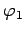
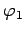

Inhalt Index DeskTop Bronstein

 Integralrechnung Mehrfachintegrale Doppelintegral Berechnung des Doppelintegrals
Integralrechnung Mehrfachintegrale Doppelintegral Berechnung des Doppelintegrals


Das Integrationsgebiet, die Fläche, wird durch Koordinatenlinien in infinitesimale Flächenstücke aufgeteilt, die jeweils durch zwei konzentrische Kreisbogen und zwei durch den Pol verlaufende Geraden begrenzt werden (s. Abbildung).
Mit einem Integranden in Polarkoordinaten gemäß hat das Flächenelement in Polarkoordinaten die Form
| (8.137a) |
Summiert wird zuerst innerhalb eines jeden Sektors, dann über alle Sektoren:
wobei und die Gleichungen der inneren bzw. äußeren Randkurve bzw.  der Fläche S sind und  bzw. die Polarwinkel der Tangenten, die das Flächenstück an seinen Rändern berühren. Die umgekehrte Integrationsreihenfolge wird selten verwendet.
der Fläche S sind und  bzw. die Polarwinkel der Tangenten, die das Flächenstück an seinen Rändern berühren. Die umgekehrte Integrationsreihenfolge wird selten verwendet.
| Beispiel |
|
, wobei S die Fläche des Halbkreises ist (s. Abbildung): |